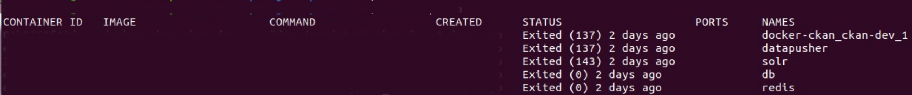

Como borrar imágenes Docker
Si tú, como yo, no sabes nada de Docker, solamente ejecutar los comandos que encuentras en el README de los proyectos, entonces este artículo es para ti.
A vezes, las imágenes del Docker del proyecto que estoy trabajando pasa a no ejecutar más. Luego, cuando no tengo tiempo para buscar el error y la solución, simplemente reinicio todo (borro y construyo de nuevo las imágenes).
Paso a paso
Para borar todas las imágenes Docker de tu ordenador, abre el terminal y ejecuta los comandos que sigue:
No hace falta que sea en una carpeta específica. Qualquiera te vale.
- Enumere todas las imágenes:
1
docker ps -a
- Comprobe que todas las imágenes estén detenidas, o sea, fijate si el status es exited. 
- Por si acaso una o más imágenes tengan otro status, necesitarás detenerlas con el comando:
1
docker stop $(docker ps -a -q)
- (optativo) Si deseas borrar los datos almacenados en una imagen específica, ingrese en la carpeta que contiene los archivos del docker-composer del proyecto (quizás sea “contrib/docker”) y ejecute:
1
docker-compose down -v
- Borre todas las imágenes:
1
docker system prune -a
Listo! Ahora tu ordenador está como si nunca tuvieras construido imágenes Docker.
También puedes leer este texto en: 🇧🇷
-----